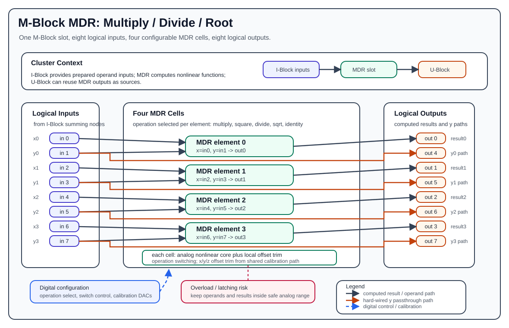

M-Block MDR¶
The M-Block MDR is the multiply/divide/root M-Block variant. It is used when an analog program needs nonlinear arithmetic beyond integration and fixed scalar weighting. One MDR block occupies one M-Block slot in a cluster and presents the normal M-Block interface of eight logical inputs and eight logical outputs, but internally it contains four configurable MDR elements.
MDR stands for multiply, divide, root. Each of the four MDR elements can be configured for one operation at configuration time:
- multiplication:
x * y - division:
x / y - square root:
sqrt(x)with the hardware input polarity described below - square:
x^2 - identity:
id(x)

Hardware Role¶
The MDR block is an M-Block, so it is part of the cluster-local analog computation loop:
- The I-Block forms the logical M-Block input values by summing weighted lane currents.
- The MDR block consumes those logical input values.
- The MDR block produces analog output voltages on the M-Block output path.
- The U-Block can then select those outputs again as sources for later routes.
The MDR block receives already prepared analog operands and applies the selected mathematical function.
Element Organization¶
One MDR block contains four MDR elements:
| MDR Element | x input | y input | Computed output | ID path output using y input |
|---|---|---|---|---|
0 |
input 0 |
input 1 |
output 0 |
input 1 to output 4 |
1 |
input 2 |
input 3 |
output 1 |
input 3 to output 5 |
2 |
input 4 |
input 5 |
output 2 |
input 5 to output 6 |
3 |
input 6 |
input 7 |
output 3 |
input 7 to output 7 |
For MDR element i:
Outputs 0..3 are the computed MDR results. Outputs 4..7 are the fixed ID path outputs from the odd-numbered input side of each element. They are useful when the y operand must remain available elsewhere in the analog program without spending another route to reproduce it.
The ID path outputs are hard-wired signal paths, not additional programmable MDR elements. They do not change when the configured MDR operation changes.
ID Path¶
The MDR block has four direct input-to-output paths called ID paths or Identity paths. For each MDR element, the odd input is copied to the corresponding upper output group:
The ID path is independent of the selected MDR operation. It is present whether the element is configured for multiplication, division, square root, square, or configurable identity. This makes the ID path useful for calibration and diagnostic loopback:
- A known analog signal can be routed into the MDR input side and observed at the ID output side.
- The signal can be looped through the M-Block output path without using the nonlinear computation result.
- The measured ID output can help separate routing/output-path behavior from the nonlinear MDR cell behavior.
- Calibration routines can compare the direct ID path with the computed output path to identify offset, gain, polarity, or overload-related effects.
The ID path should be understood as a hardware bypass/loopback path for the odd operand side. It is not the same thing as configuring an MDR element with the Identity() operation.
MDR Cell Structure¶
Each MDR element is an analog nonlinear cell with two operand inputs and one computed result path:
xis the first operand and comes from the even input index.yis the second operand and comes from the following odd input index.- The selected operation determines how the analog multiplier/divider/root circuitry is connected.
- Local offset trim signals compensate the internal x, y, and output/result paths.
- Overload detection monitors whether internal or external values leave the safe analog operating range.
- Digital switch-control lines select the active operating mode for the cell.
The four cells share the same block-level control and calibration infrastructure, but each cell has its own operand pair, result output, offset trims, and overload-related signal path.
Supported Operations¶
Multiplication¶
Multiplication computes:
Use multiplication when both operands are dynamic analog quantities. The normal documentation range is:
Example:
Division¶
Division computes:
Division must be used carefully because the denominator must not approach zero and the result must remain inside the valid analog output range. The current pybrid standalone MDR example tests division over operands in the normalized range and rejects invalid denominator/result combinations:
Older or narrower validation notes may describe a conservative quadrant such as x >= 0 and y <= 0. Treat that as a conservative subset rather than the full programming model. The most important operational constraint is: never configure a division that can drive the denominator through zero or drive the result beyond the analog range.
Example:
Square Root¶
Square root computes a root-like nonlinear operation. In the current hardware usage model, the operand polarity is important. The existing pybrid test setup routes a coefficient with opposite sign so that the hardware-side input polarity produces the intended positive root:
desired mathematical value = sqrt(a), where a >= 0
configured route value = -a
observed result = sqrt(a)
The current pybrid standalone MDR example tests non-negative mathematical operands up to the normalized output constraint:
If a hardware characterization campaign specifies a narrower range, for example a <= 0.8, use that narrower range for production documentation and test planning. In pybrid-facing documentation, keep the sign convention explicit and avoid silently assuming that square-root mode accepts arbitrary signed operands.
Example:
Do not assume the square-root mode accepts the same signed input convention as multiplication. Treat the sign convention as part of the MDR hardware interface and verify the route polarity when programming a model.
Square¶
Square uses only the x operand:
The y input for that element is not part of the square computation, but the odd input path is still physically present and still appears on the corresponding ID path output 4+i.
Example:
Configurable Identity Operation¶
The configurable identity operation uses only the x operand:
This is an explicitly configurable operation of the MDR element. It is different from the fixed ID path outputs 4..7:
- Configured identity drives the computed output
ifrom the element's x side. - The fixed ID path drives output
4+ifrom the element's y side.
Input And Output Polarity¶
The MDR documentation should distinguish between mathematical operands and the physical/cluster signal polarity observed at a measurement point. In normal cluster programming, values are routed through the U-Block, C-Block, and I-Block before they reach an M-Block input. That path can introduce the sign convention used by the cluster input/output interface.
For example, the standalone MDR verification routes constants through the coefficient and input-summing path, then captures both computed outputs and ID path outputs. In that setup, the ID path outputs are expected with the polarity produced by the physical M-Block signal path, not merely by the positive coefficient written in the test script.
When documenting MDR equations, use x and y for the analog values actually present at the MDR element inputs. When documenting pybrid routes, separately state which coefficient and input index produce those values.
Calibration And Offset Trim¶
The MDR cell is an analog computation circuit, so it needs calibration support. The hardware provides per-cell offset trim paths for the operand and result stages:
- x-path offset trim
- y-path offset trim
- z/result-path offset trim
These trims are driven by block-level calibration circuitry and are configured through the digital control path. Their purpose is to reduce static errors in the nonlinear element before the result is used by the surrounding analog program.
In the current public pybrid MDR API, these offset trims and overload mechanisms are not exposed as user-settable fields on MMDRBlock. pybrid serializes the selected operation for each MDR element; low-level offset trim and overload handling belong to the hardware/firmware calibration layer.
At documentation level, the cell can be understood as:
The trim path does not make the MDR block a digital computation block. The computation remains analog; the digital infrastructure configures operating mode and calibration voltages.
Overload And Latching Risk¶
The MDR block is sensitive to invalid analog ranges. If a cell is overdriven, the output can become invalid and the cell may enter a latched or disturbed state. After that, even later inputs that are back inside the nominal range can produce wrong results until the block is reconfigured or reset by a full device configuration cycle.
Avoid these conditions:
abs(x) > 1.0abs(y) > 1.0abs(result) > 1.0- denominator values near zero in division mode
- square-root inputs outside the tested sign/range convention
- transient overshoots during setup that exceed the safe analog range
Latching
If one of the valid operating limits is violated, the MDR block may enter a latching or disturbed state. Results can remain wrong even after later inputs return to valid ranges. Avoid exceeding the limits at all costs. A configuration cycle resets the affected analog elements.
Example Signal Flow¶
Suppose element 0 should compute:
The logical MDR wiring is:
input 0 -> element 0 x
input 1 -> element 0 y
element 0 result -> output 0
input 1 passthrough -> output 4
A typical cluster-level setup is:
- Enable a constant source or route an existing M-Block output through the U-Block.
- Use C-Block coefficients to create the desired x and y operand values.
- Connect the x lane to MDR input
0through the I-Block. - Connect the y lane to MDR input
1through the I-Block. - Configure
mdr.elements[0].op = Multiplication(). - Run the analog operation and read output
0as the product.
The expected computed output is:
The fixed ID path also makes the y-side signal available on output 4, subject to the physical signal polarity of the M-Block output path.
Programming With pybrid¶
The pybrid class for this block is:
The operation classes are:
from pybrid.base.analog.computations import (
Multiplication,
Division,
SquareRoot,
Square,
Identity,
)
An MDR block appears as either cluster.m0block or cluster.m1block, depending on which physical M-Block slot is populated:
from pybrid.redac.blocks import MMDRBlock
if isinstance(cluster.m0block, MMDRBlock):
mdr = cluster.m0block
m_offset = 0
elif isinstance(cluster.m1block, MMDRBlock):
mdr = cluster.m1block
m_offset = 8
else:
raise RuntimeError("No MDR block in this cluster")
m_offset matters because one cluster has 16 logical M-Block input indices:
0..7address the first M-Block slot.8..15address the second M-Block slot.
For MDR element i, route operands to:
Configure an operation by assigning the element operation:
mdr.elements[0].op = Multiplication()
mdr.elements[1].op = Square()
mdr.elements[2].op = Division()
mdr.elements[3].op = SquareRoot()
The current serializer writes one MDR operation per element using the operation type:
| Python operation | Serialized MDR operation |
|---|---|
Multiplication() |
MULTIPLY |
Square() |
SQUARE |
Division() |
DIVIDE |
SquareRoot() |
SQRT |
Identity() |
IDENT |
mdr.reset() resets all four elements back to their default operation, which is multiplication in the current pybrid model.
Minimal pybrid Example¶
This example configures MDR element 0 for multiplication and routes two constants into its x and y inputs. It assumes mdr and m_offset have already been resolved as shown above.
from pybrid.base.analog.computations import Multiplication
cluster.ublock.reset()
cluster.cblock.reset()
cluster.iblock.reset()
mdr.reset()
cluster.ublock.set_constant(1.0)
mdr.elements[0].op = Multiplication()
cluster.ublock.connect(15, 0, force=True)
cluster.cblock.elements[0].factor = 0.5
cluster.iblock.connect(0, m_offset + 0, force=True)
cluster.ublock.connect(15, 4, force=True)
cluster.cblock.elements[4].factor = 0.3
cluster.iblock.connect(4, m_offset + 1, force=True)
After configuration, MDR element 0 receives approximately x = 0.5 and y = 0.3 at its two logical inputs and computes the product on its computed output path.